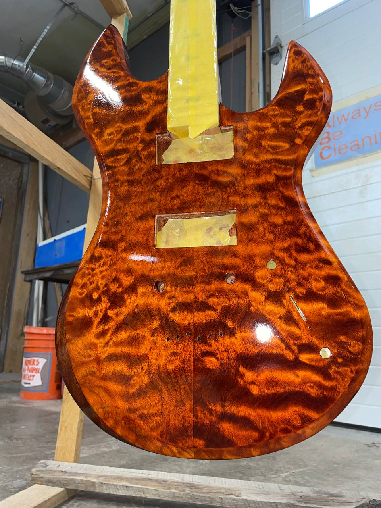
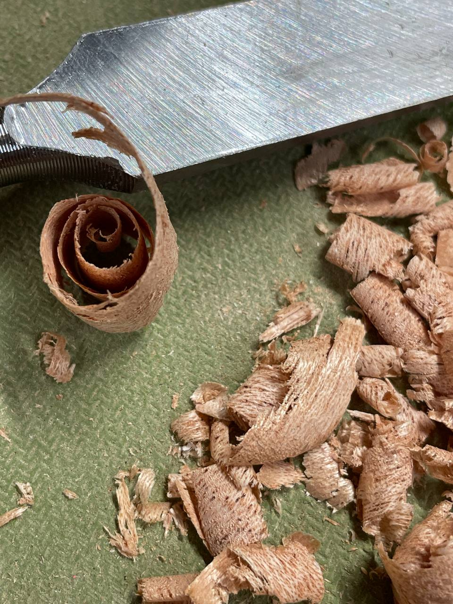
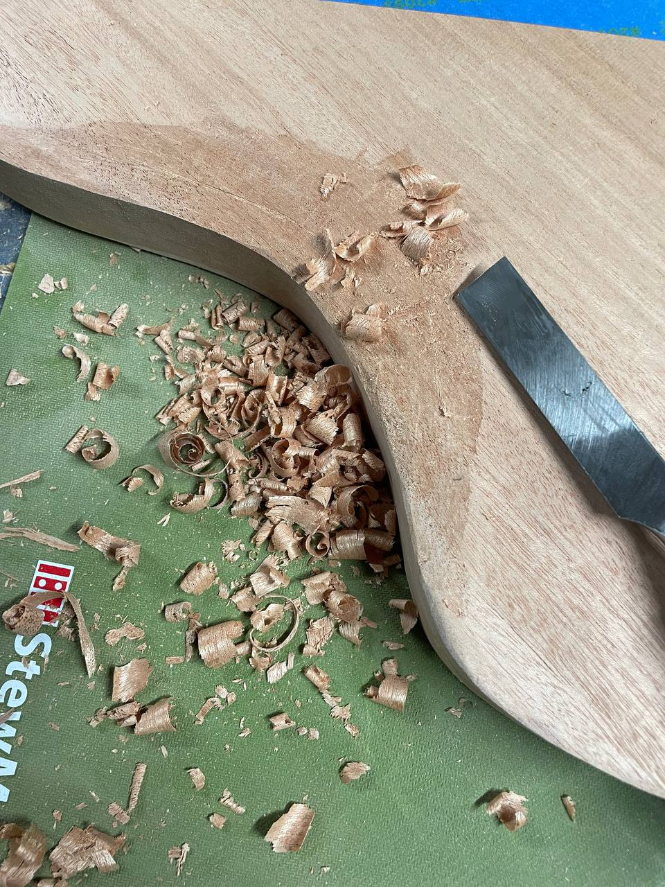
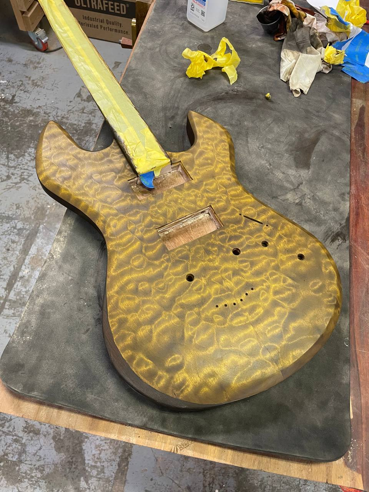
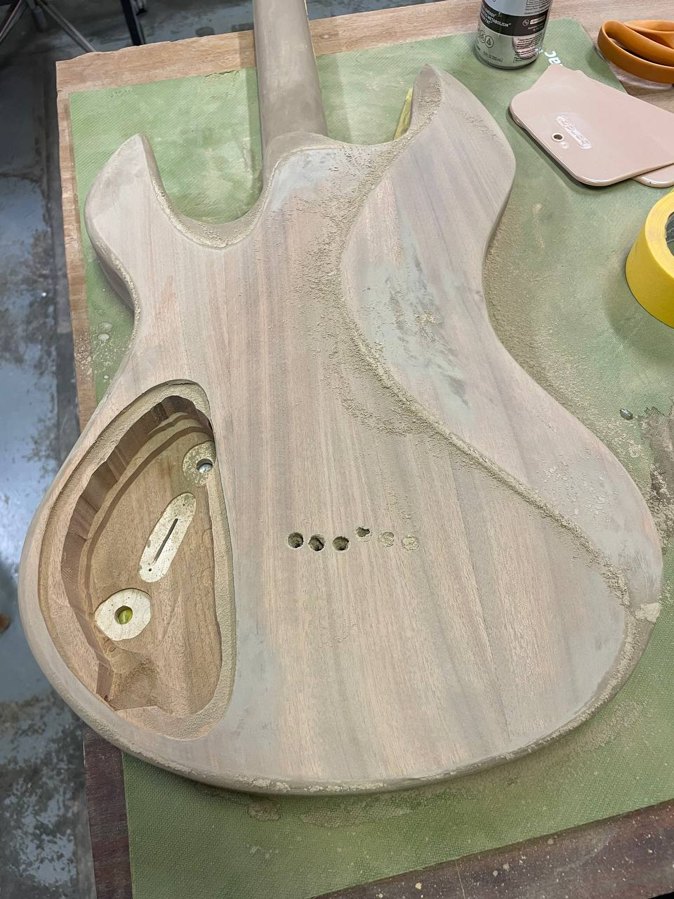
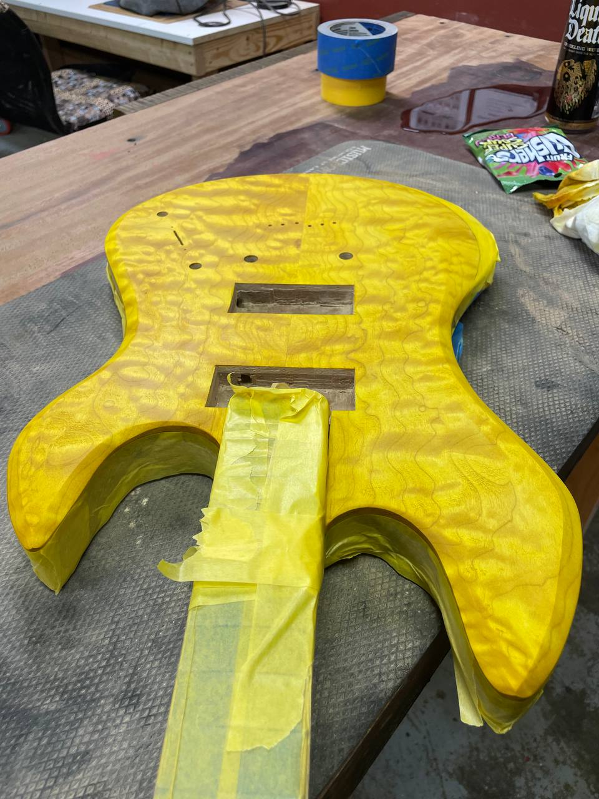
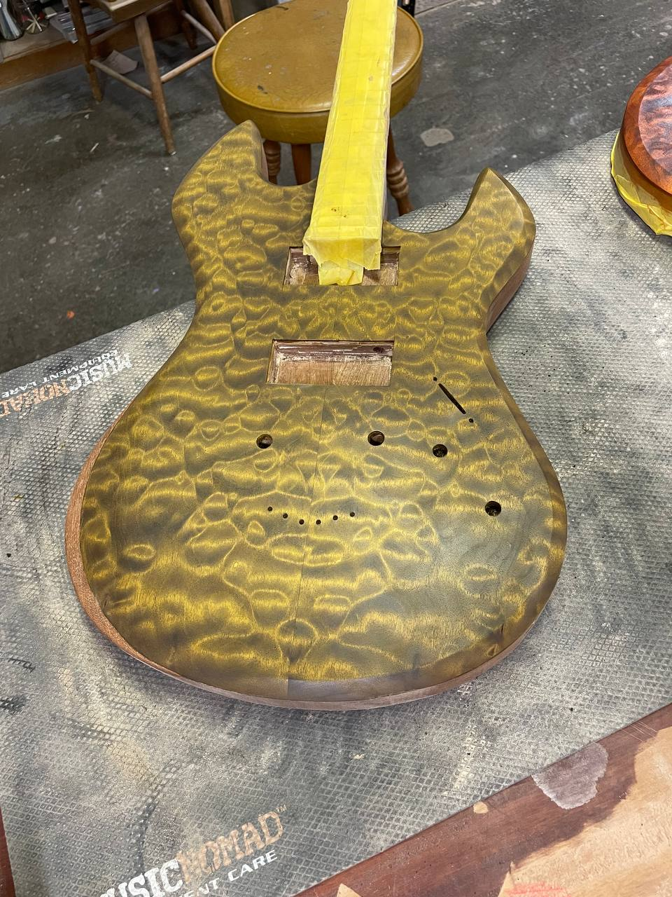
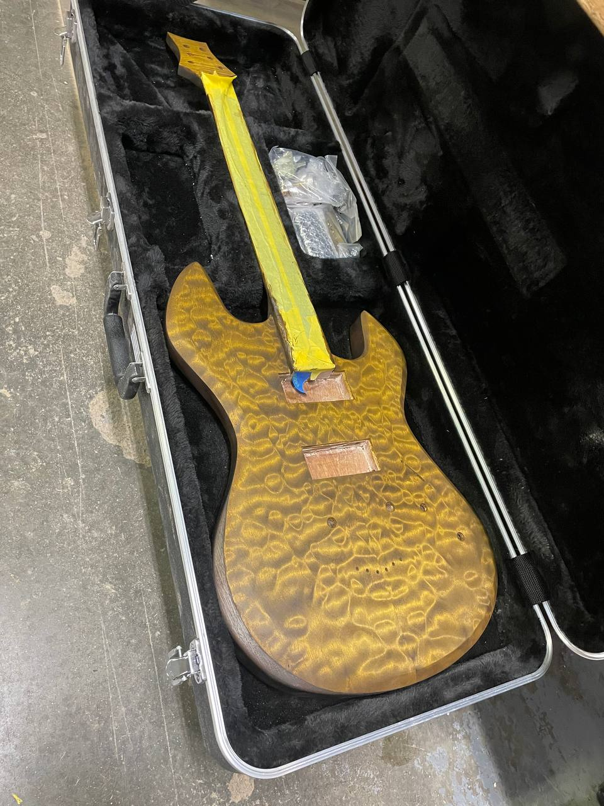

Mahogany, maple, and a nitro finish that should crack up nicely with age.

Lil Goldie is my guitar.
First build after the Relic Messenger, still finishing it. African mahogany back, quilted maple top. Strat-based shape with horns I stylized a little — somewhere between a PRS and a Languedoc. Classic p90 soap bars in it right now, but the plan is to swap the bridge for a hand-wound clear p90 like the one on the Relic Messenger. Same nitrocellulose clear coat, which looks like glass when it goes on and should check up beautifully once it's had a few years on it.
Having the Relic Messenger under my belt was the big thing going in. I already knew the rough timeline, the stain sequence, what order to do everything in. The first build felt like I was guessing at the next step every time. This one I could actually think about what I wanted it to be instead.
It went through an electric yellow phase on the way to gold. Stain does what it wants.
Cut. Sand. Polish. Play.






